Cultivaria
Наш собственный модпак — и сервер только для своих.
Our own modpack, and a server just for us.
Это не «ванилла плюс пара модов». Тут подземелья с уровнями, боссы, у каждого из которых своё логово, база, которая растёт и тянет за собой весь мир, кухня с пивом и вином, трава как целая наука, и её можно толкать жителям, а каждая сделка — лотерея. Техники и энергии нет: вместо этого ходишь, копаешь, воюешь и выращиваешь. Самое главное — базу, траву, торговлю и карту — мы написали сами, специально под этот сервер. И всё заточено под компанию: чем вас больше, тем крепче мобы и жирнее лут, а пир и косяк по кругу бафают сразу всех.
This isn't "vanilla plus a couple of mods". You get dungeons with tiers, bosses that each have their own lair, a base that grows and drags the whole world up with it, a kitchen with beer and wine, and weed as a whole science that you can push to villagers, where every deal is a lottery. There's no tech and no power: instead you walk, dig, fight and grow. The big stuff (the base, the weed, the trading and the map) we wrote ourselves, specially for this server. And it's all built for a crew: the more of you there are, the tougher the mobs and the fatter the loot, and a feast or a joint going round buffs everyone at once.
Мир тут не ванильный: горы, тропические берега, кленовые и секвойевые леса, цветущие дюны, и всё под боком — до пустыни или снегов не надо топать полдня.
The world here isn't vanilla: mountains, tropical shores, maple and redwood forests, blooming dunes, and it's all close by, so no half-day hike to reach a desert or snow.
Координаты боссов никто не раздаёт: подсказки, где их логова, выпадают в сделках за траву.
Nobody hands out boss coordinates: hints about where their lairs drop from weed deals.


Реки настоящие: текут по рельефу, ветвятся и стекают к морю.
The rivers are real: they follow the land, branch out and run down to the sea.


В Нижнем мире новые биомы, в Крае новый остров.
The Nether has new biomes, the End has a new island.
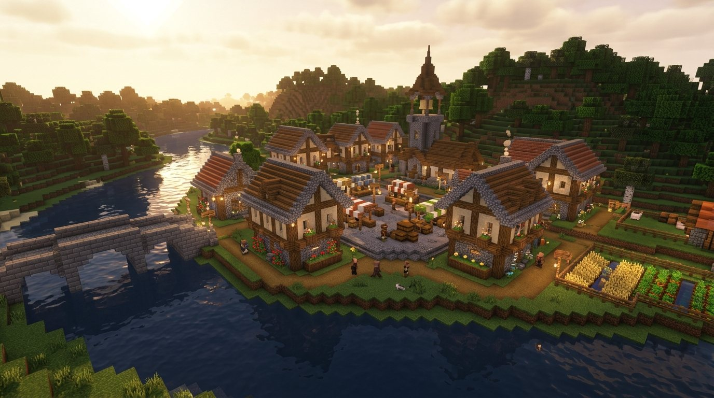
Деревни крупнее и попадаются чаще, от пляжных до горных и подземных, а между ними — подземелья, арены боссов, корабли и руины в море.
Villages are bigger and show up more often, from beach ones to mountain and underground ones, and between them sit dungeons, boss arenas, ships and ruins in the sea.
Карта у нас — Diorama, и это не плоская картинка, а объёмный макет мира под углом: тянешь, крутишь, приближаешь и видишь крыши, склоны и реки.
Our map is Diorama, and it's not a flat picture but a 3D model of the world at an angle: drag it, spin it, zoom in and you see roofs, slopes and rivers.


Есть миникарта с компасом, туман там, где ты ещё не был, пещеры в разрезе и вид Нижнего мира.
There's a minimap with a compass, fog where you haven't been yet, cave cutaways and a Nether view.

Друзей на ней видно, даже если они на другом конце мира.
You can see your friends on it even when they're on the other side of the world.

На Forge такой карты не было — мы перенесли её сами.
Forge never had a map like this, so we ported it ourselves.
Главные подземелья тут с уровнями, от первого до пятого: первый — на первые вечера, пятый — уже эндгейм.
The main dungeons here have tiers, from one to five: tier one is for your first evenings, tier five is already endgame.
Зачищенное подземелье само отстраивается через несколько часов игры, а «Ключ подземелья» перезапускает его сразу.
A cleared dungeon rebuilds itself after a few hours of play, and a "Dungeon Key" restarts it right away.


Внутри три этажа, элитные мобы со своими фишками (один лечит своих, другой таранит, третий пьёт кровь), на третьем этаже «Засада!», на дне мини-босс, и у каждого забега своя тема: склеп, затопленное подземелье, логово разбойников.
Inside there are three floors, elite mobs with their own tricks (one heals his buddies, another rams you, a third drinks your blood), an "Ambush!" on the third floor, a mini-boss at the bottom, and every run has its own theme: a crypt, a flooded dungeon, a bandit hideout.
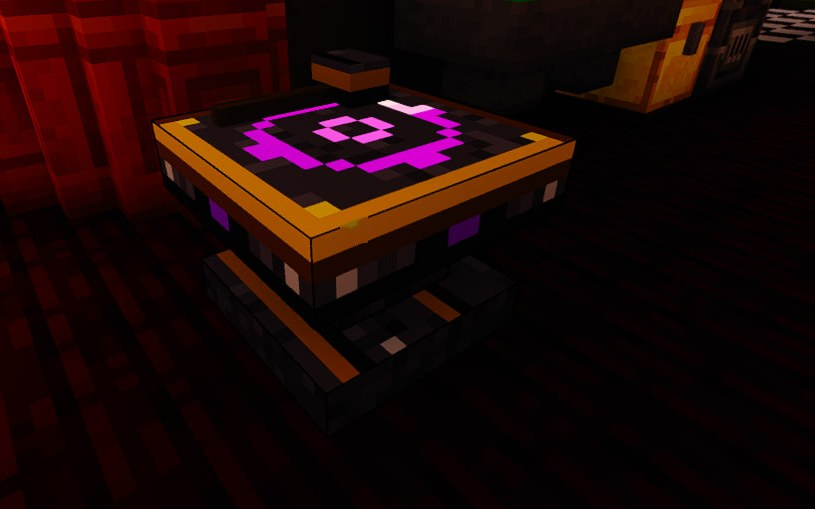
Шмот с особыми свойствами падает только здесь, а если выпало не то, его перебросит «Стол перековки».
Gear with special properties drops only here, and if you got the wrong thing, the "Reforging Bench" rerolls it.

Кроме них есть крепости, храмы, корабли, морские руины и врата с волнами мобов.
On top of those there are fortresses, temples, ships, sea ruins and gates that spit out waves of mobs.
А между походами движуха сама приходит к тебе: рейды на деревни, караваны разбойников с грузом, ящики с неба с набором под твою роль (координаты пишут в чат), кровавые луны, когда мобов вдвое больше, зато и лута с них больше, и урожайная луна, когда трава растёт быстрее и сделки идут лучше.
And between trips the action comes to you: raids on villages, bandit caravans hauling cargo, crates from the sky with a kit for your role (the coordinates go to chat), blood moons with twice the mobs but more loot off them too, and the harvest moon, when weed grows faster and deals go better.

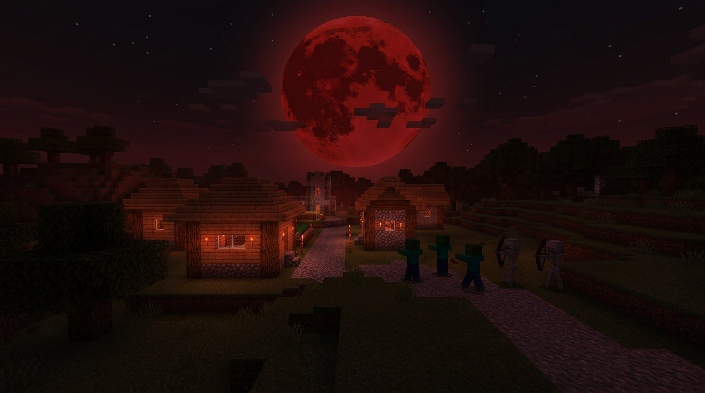
Боссов тут два десятка, и у каждого своё логово: Йети в берлоге, Инфернальный дракон в башне, Капитан пиратов с Кракеном на корабле.
There are two dozen bosses here, and each has its own lair: the Yeti in a den, the Infernal Dragon in a tower, the Pirate Captain with the Kraken on a ship.
Сундуки в логове заперты, пока босс жив. Закайтить не выйдет: они догоняют, делают рывок и ломают заборы.
The chests in a lair stay locked while the boss is alive. Kiting won't work: they catch up, dash at you and smash through fences.


Есть ранние, средние и поздние; поздние — это уже эндгейм, туда без подготовки не суйся.
There are early, mid and late ones; the late ones are already endgame, so don't show up unprepared.

Огнестрел здесь достать можно, но против них он почти бесполезен, так что на босса идут с мечом, луком и инструментами Tinkers'.
You can get guns here, but against them guns are nearly useless, so you go at a boss with a sword, a bow and Tinkers' tools.

А ещё с боссов падают материалы, из которых в Tinkers' выходят совсем другие инструменты: например, кирка, которая видит руду сквозь стены или плавит её прямо на ходу.
Bosses also drop materials that turn into completely different tools in Tinkers': say, a pickaxe that sees ore through walls or smelts it as you mine.
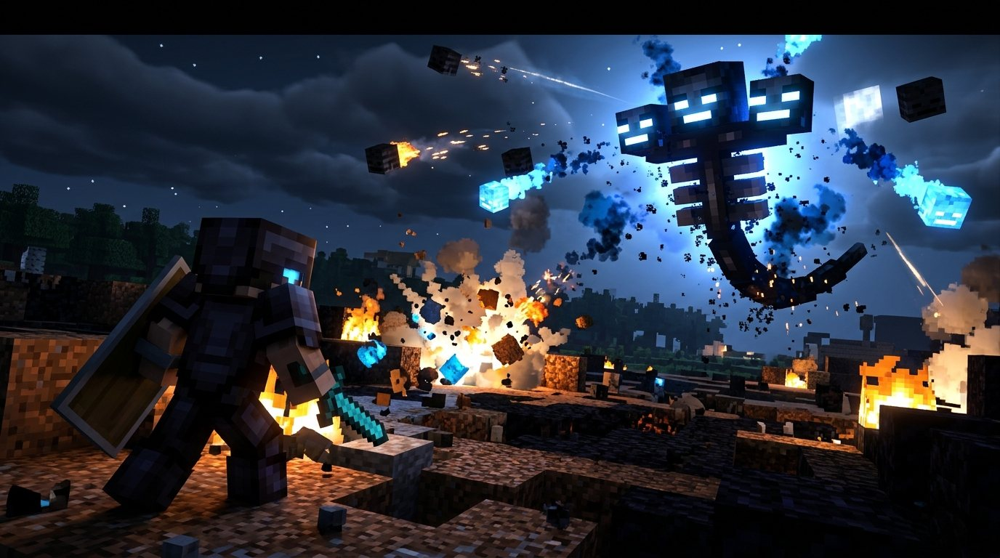
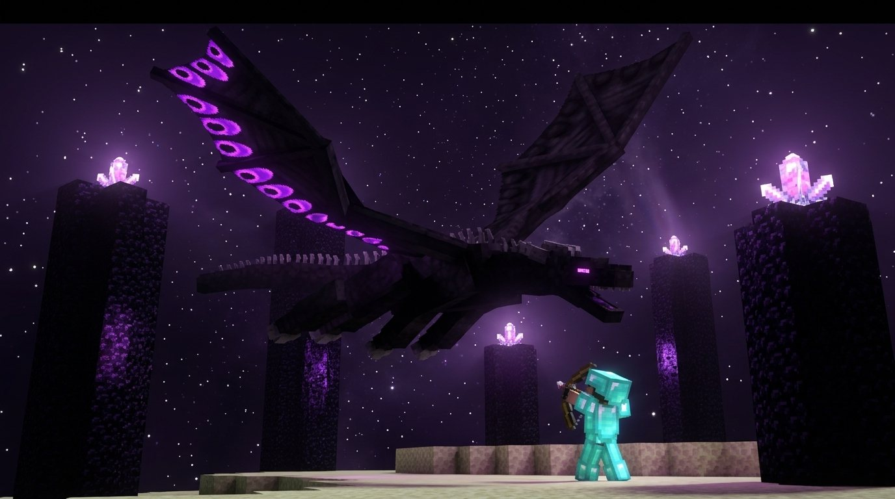
Визера и Дракона Края тоже переделали: у них новые атаки и фазы, а Дракон теперь здоровенный, европейский. Но это боссы середины игры, а не финал.
The Wither and the Ender Dragon got reworked too: they have new attacks and phases, and the Dragon is now a huge European-style one. But they're mid-game bosses, not the finale.
Сердце базы — наш блок «Очаг». Ставишь его — и база основана, друзья к ней присоединяются, а вокруг появляется зона, которую по ночам подсвечивает светящаяся лоза.
The heart of a base is our "Hearth" block. Place it and the base is founded, your friends join it, and a zone appears around it that glowing vines light up at night.
Постоишь у Очага на корточках — унесёшь с собой «Благословение Очага»: лишнее сердце, а с базы повыше два сердца и плюс к урону, и работает оно где угодно.
Crouch at the Hearth for a moment and you'll carry the "Hearth's Blessing" away with you: an extra heart, or two hearts and bonus damage from a higher-tier base, and it works anywhere.
А над всеми базами стоит «Уровень мира» — общий прогресс сервера. Когда компания закрыла список целей (базы, боссы, подземелья, собранная трава), кто-нибудь один жмёт кнопку на Очаге, и мир для всех становится опаснее и щедрее: мобы и боссы крепче, лут лучше, появляются новые твари.
And above all the bases sits the "World Level", the whole server's shared progress. Once the crew has ticked off the goal list (bases, bosses, dungeons, weed collected), any one of you presses the button on the Hearth, and the world gets more dangerous and more generous for everyone: mobs and bosses get tougher, loot gets better, new creatures show up.
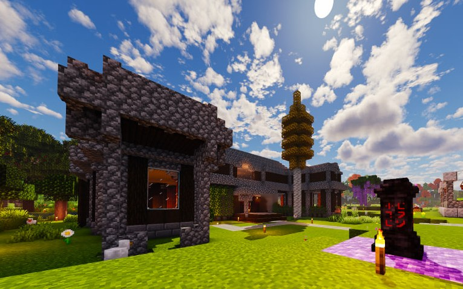
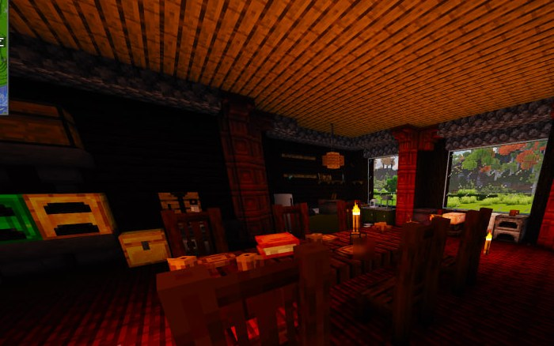

У базы три уровня, и для каждого мало просто наставить блоков: нужны души боссов и комнаты, которыми реально пользуются, — мастерская, склад, грядка, потом пивоварня, алхимия, кухня.
The base has three tiers, and for each one just placing blocks isn't enough: you need boss souls and rooms people actually use, like a workshop, storage, a grow plot, and later a brewery, alchemy and a kitchen.

Зато в зоне базы тебя подлечивает, возрождаешься ты у Очага, а всё растёт и плавится быстрее.
In return, inside the base zone you get healed, you respawn at the Hearth, and everything grows and smelts faster.
Трава — целая наука, и этот мод мы написали сами: полторы сотни сортов, от дешёвой стартовой дряни вроде Izberbash Bus Stop до легенд, и часть из них растёт в дикой природе, каждый сорт в своём климате.
Weed is a whole science, and we wrote this mod ourselves: a hundred and fifty strains, from cheap starter junk like Izberbash Bus Stop to legendaries, and some of them grow in the wild, each strain in its own climate.
Есть и свои сорта в честь мест Дагестана: Sarykum Dune, Gunib Ghost, Derbent Wall, Махачкалинские Ночи.
There are also our own strains named after places in Dagestan: Sarykum Dune, Gunib Ghost, Derbent Wall, Makhachkala Nights.
Скрещиваешь прямо на грядке: спелый куст опыляет соседний, пчёлы помогают, а легенду выведешь только из дикой пыльцы и правильной пары семян.
You cross them right on the grow plot: a ripe bush pollinates its neighbor, bees help out, and you only get a legendary from wild pollen and the right pair of seeds.
Качество зависит от почвы, света и климата: в родном климате куст прёт, в чужом еле тянет, а с химией выходит больше, но трава хуже.
Quality depends on soil, light and climate: in its home climate a bush goes wild, in a foreign one it barely gets by, and with chemicals you get more, but worse weed.
У каждого сорта своя роль — Шахтёр, Боец, Путник, Фермер, Дилер, Повар, Учёный — и свой прикол на приходе, а легенды ещё и дают перк, пока ты под ними.
Every strain has its role (Miner, Fighter, Explorer, Farmer, Dealer, Chef, Scholar) and its own quirk when the high kicks in, and legendaries also give you a perk while you're on them.


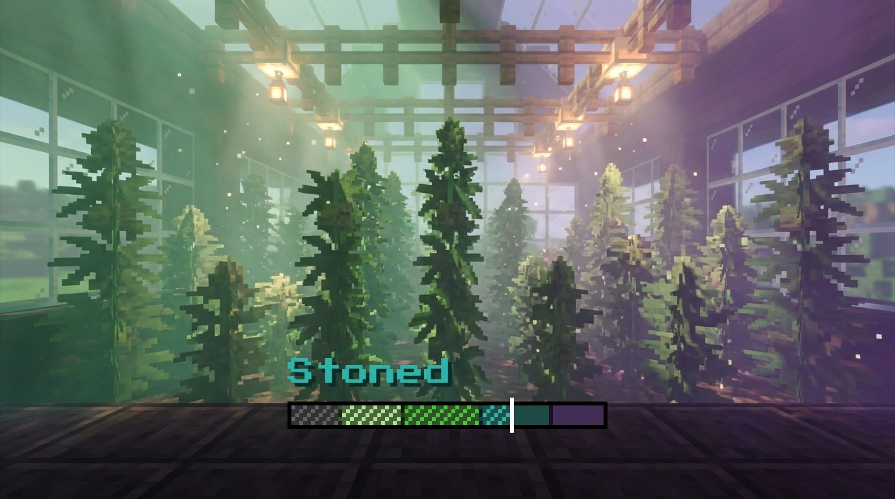
Накуренность идёт по шкале, от «слегка накурен» до «в хлам»; перебрал — тошнит и темнеет в глазах.
Being high goes on a scale, from "buzzed" to "baked"; overdo it and you get sick and your vision goes dark.
Продать здесь можно только траву, а покупают её жители деревень. Платят не изумрудами, а вещами: просят шишки не ниже нужного качества, иногда конкретный сорт, и дают что-то взамен.
The only thing you can sell here is weed, and villagers are the ones buying. They pay with items, not emeralds: they ask for buds of at least a certain quality, sometimes a specific strain, and give you something in return.
И вся эта торговля — сплошной азарт. Что тебе дадут за шишки, решает бросок: обычная вещь, редкая или джекпот, про который тут же узнаёт весь сервер.
And all this trading is pure gambling. What you get for your buds comes down to a roll: a common item, a rare one, or a jackpot that the whole server hears about right away.
А для своих есть «Лавка»: выставил лоты, друзья купили.
And for your friends there's the "Shop": put up your listings, your friends buy.


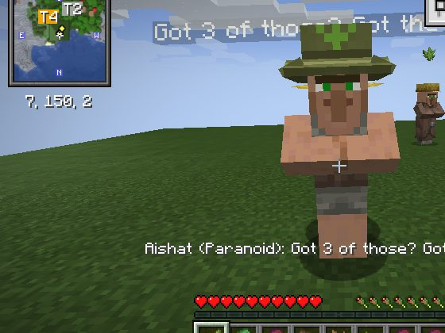
У покупателей свой характер: жадный просит больше, параноик не берёт при големе, болтун приводит соседа, а подсевшие, если им долго не продавать, начинают тырить у тебя из карманов и стучать. Полиции нет: худшее, что может случиться, — спалиться днём при големе, и тогда деревня до утра задирает цены.
Buyers have personalities: the greedy one wants more, the paranoid one won't buy with a golem around, the chatty one brings a neighbor, and the hooked ones, if you don't sell to them for too long, start lifting stuff from your pockets and snitching. There are no cops: the worst that can happen is getting caught by a golem in daylight, and then the village jacks up its prices until morning.
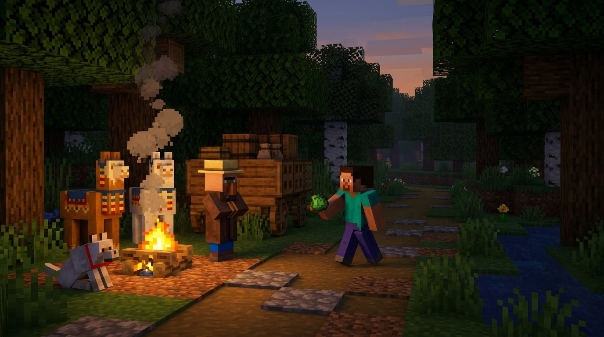
Второй рынок — Ценитель, бродячий тип в панаме и с псом: берёт только шишки и платит оружием, от пистолета за дешёвую траву до штурмовых винтовок за топовую, которых больше нигде не достать, а иногда даёт карту к дикому сорту или ключ от подземелья. Чем больше торгуешь с ним и с деревнями, тем выше твой ранг дилера, и каждый новый ранг объявляют всем в чате.
The second market is the Connoisseur, a wandering guy in a bucket hat with a dog: he only takes buds and pays in guns, from a pistol for cheap weed to assault rifles for top-shelf stuff that you can't get anywhere else, and sometimes he gives you a map to a wild strain or a dungeon key. The more you trade with him and with the villages, the higher your dealer rank, and every new rank gets announced to everyone in chat.
«Игровой автомат» — казино по-настоящему: скармливаешь ему шишки или ствол, который не жалко, дёргаешь рычаг и выигрываешь патроны, семена, ключи, редкие материалы или ствол классом выше — либо ничего.
The "Slot Machine" is the casino proper: you feed it buds, or a gun you're willing to lose, pull the lever and win ammo, seeds, keys, rare materials or a gun a class up, or nothing.
Все проигранные ставки со всего сервера падают в общий банк, его табло видно через всю базу, а кто выбьет три семёрки, забирает банк целиком — все шишки, которые спустили друзья, — плюс приз, с огнями, фанфарами и строчкой в чат.
Every bet anyone on the server loses drops into one shared pot, the machine shows it from across the base, and whoever lands the triple seven takes the whole pot, every bud their friends blew, plus a prize, with the lights, the fanfare and the chat line to go with it.
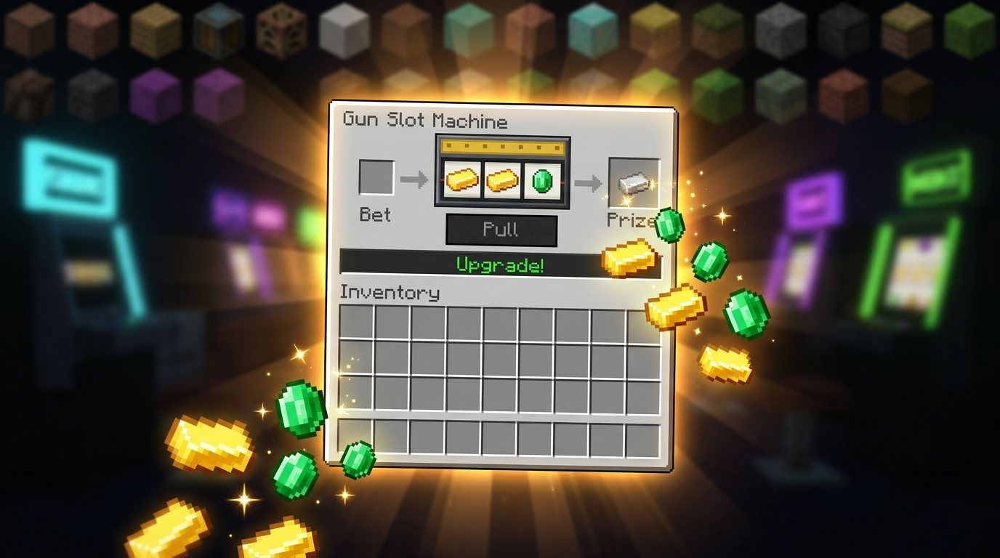
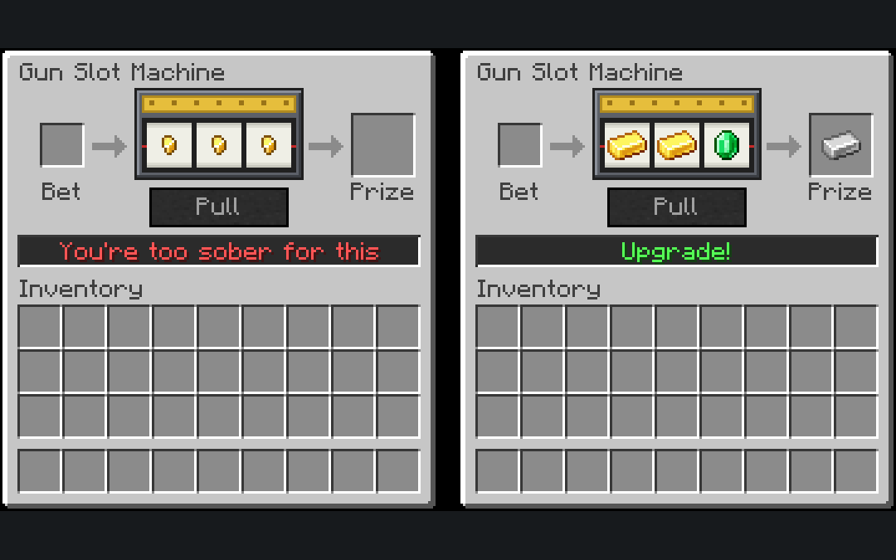
Выигрыш можно поставить ещё раз, на приз побольше, шансы всегда на экране, но трезвым к автомату не подходи: играть можно только накуренным или пьяным.
You can put a win back on the line for a bigger one, the odds are always on the screen, but don't go near the machine sober: you can only play high or drunk.
Кухня собрана из нескольких кулинарных модов, которые мы подружили между собой: готовка, выпечка, сыры, а пиво, мёд и вино пьянят по-настоящему.
The kitchen is built from several cooking mods that we got working together: cooking, baking, cheeses, and beer, mead and wine get you properly drunk.
Главная фишка — Пир: четыре разных блюда на столе, и каждый, кто поел, два часа ходит с двумя лишними сердцами и плюсом к урону.
The main thing is the Feast: four different dishes on a table, and everyone who eats walks around for two hours with two extra hearts and bonus damage.
Восемь блюд на двух столах — это уже Великий пир: тогда раз в полчаса смертельный удар тебя не убивает.
Eight dishes on two tables makes it a Grand Feast: then once every half hour a killing blow doesn't kill you.


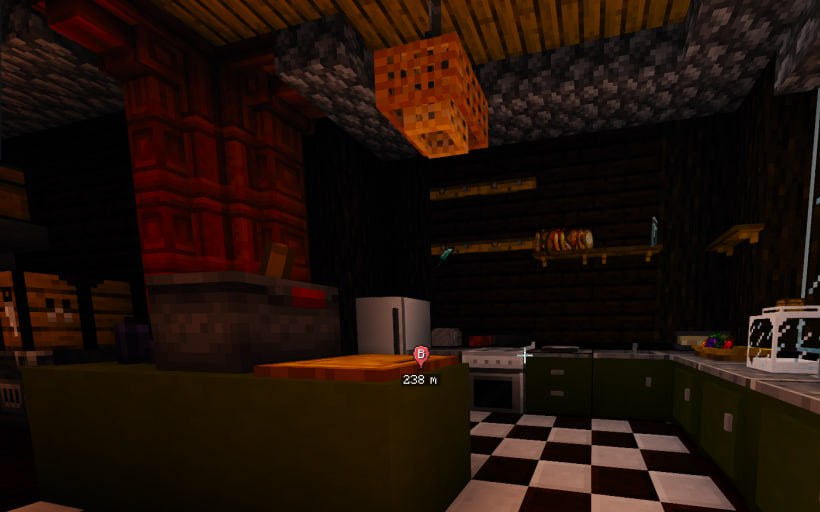
Разнообразная еда — это здоровье: чем больше разных продуктов ты перепробовал, тем больше у тебя сердец, и после смерти счёт не сбрасывается. Стейк из печки почти не насыщает — сытость дают блюда.
Varied food means health: the more different foods you've tried, the more hearts you have, and the count doesn't reset when you die. A steak from the furnace barely fills you up; meals are what keep you full.
Скот попадается чаще, чем в ванили, стада большие, а из твоих загонов никто не пропадает; пугало отгоняет мобов от грядок.
Animals show up more often than in vanilla, herds are big, and nothing goes missing from your pens; a scarecrow keeps mobs off your crops.
Для фруктов есть свои деревья, виноград и пресс, для конопли — особые грядки, УФ-лампа, под которой что угодно растёт где угодно, и ножницы, с которыми урожай больше.
Fruit gets its own trees, grapes and a press; weed gets special grow plots, a UV lamp that makes anything grow anywhere, and shears that get you a bigger harvest.


Мебели и декора навалом: столы, стулья и полки из любого дерева, подушки, ковры, шторы, картины, мосты, стекло, которое сливается в сплошную витрину.
Furniture and decor by the ton: tables, chairs and shelves from any wood, cushions, rugs, curtains, paintings, bridges, and glass that merges into one seamless display window.
Трава, зелья, еда и напитки — четыре разных источника бафов, и если собрал несколько сразу, ты «Готов к бою»: реген, лишние сердца и защита от отбрасывания.
Weed, potions, food and drinks are four different sources of buffs, and if you've stacked several at once, you're "Prepared": regen, extra hearts and knockback resistance.
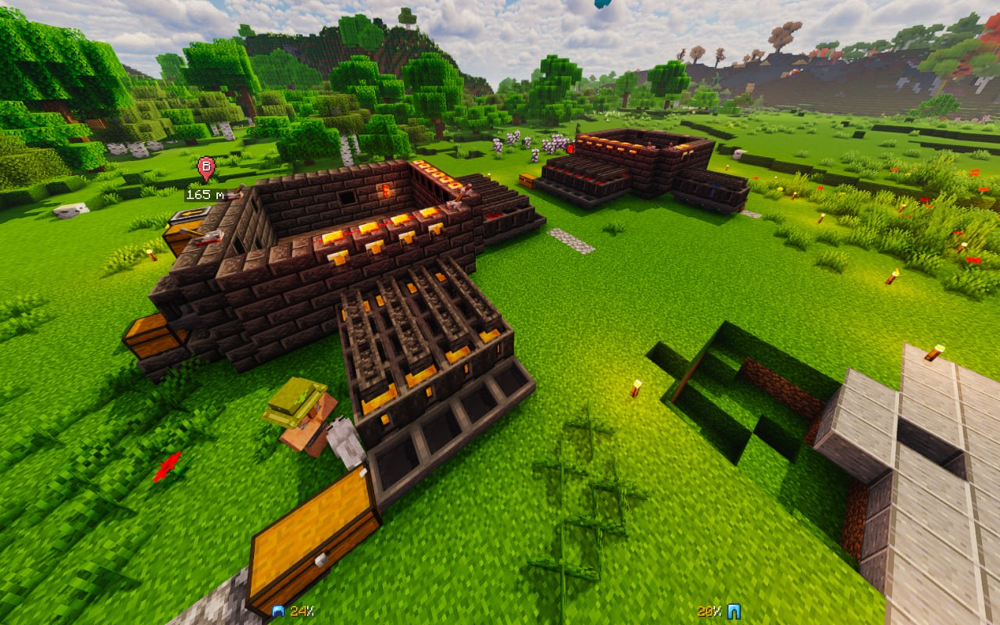
Оружие и инструменты — Tinkers' Construct: собираешь из деталей, они прокачиваются, пока ими пользуешься, а материалы с боссов дают свойства, которых больше ни у чего нет.
Weapons and tools are Tinkers' Construct: you build them from parts, they level up as you use them, and boss materials give them properties nothing else has.
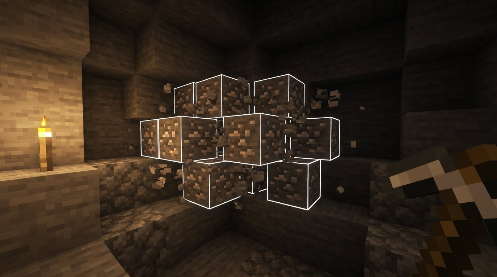
Руда выкапывается всей жилой сразу, а главный бонус к добыче даёт шахтёрская трава.
Ore comes out a whole vein at a time, and the main mining bonus comes from Miner weed.

Зелья — отдельное ремесло, и мы специально держим их в цене: готовых в луте почти нет, варить придётся самому.
Potions are a craft of their own, and we keep them valuable on purpose: there are almost no ready-made ones in loot, so you'll have to brew them yourself.
Кнопка «Сложить всё» на любом экране отправляет вещи в ближайший терминал, а пульт открывает его из любой точки базы.
The "Stash all" button on any screen sends your stuff to the nearest terminal, and a remote opens it from anywhere on the base.

Для хранения у нас свой «Терминал заначки»: один блок видит все сундуки вокруг, есть поиск и сортировка, а крафтить можно прямо из него — нужное само подтягивается из сундуков.
For storage we've got our own "Stash Terminal": one block sees every chest around it, has search and sorting, and you can craft straight from it, with whatever you need pulled from the chests on its own.


Лава сама идёт по трубам в плавильню, есть рюкзаки, вейстоуны между базами и машины, чтобы гонять по дорогам.
Lava runs through pipes into the smeltery by itself, there are backpacks, waystones between bases and cars for cruising the roads.
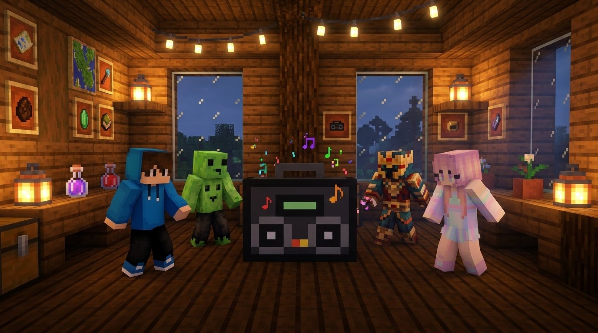
«Бумбокс»: любая музыка, которую мы закинем на сервер, есть в бумбоксе у каждого — ставишь его на пол или включаешь прямо с руки.
The "Boombox": any music we put on the server is in everyone's boombox, and you can set it on the floor or play it right from your hand.
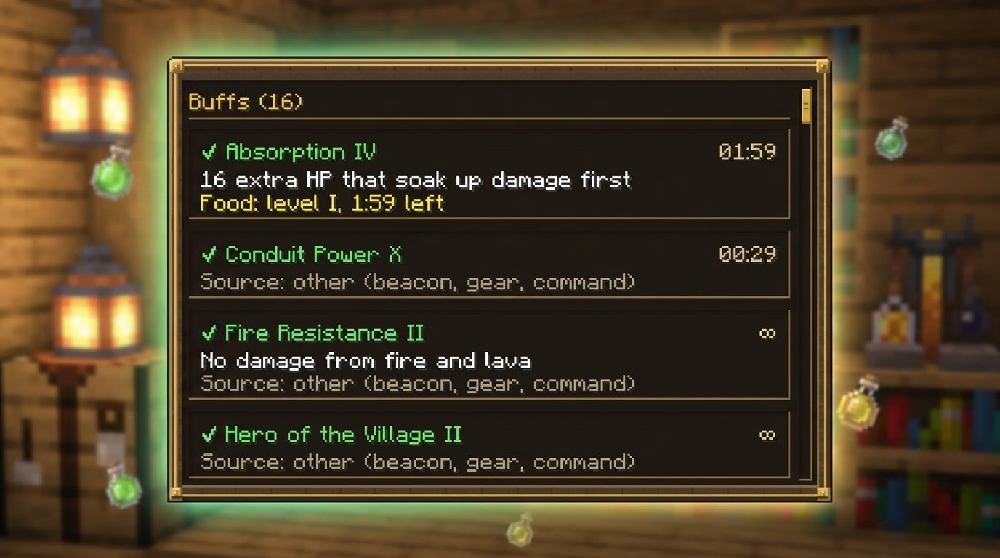
А экран бафов показывает, откуда что взялось — трава, зелье, еда — и насколько именно ты сейчас сильнее.
And the buffs screen shows where everything came from (weed, potion, food) and exactly how much stronger you are right now.
На столе трансмогрификации на свою броню можно надеть вид любой другой брони, которая у тебя есть: характеристики остаются, меняется только вид, и с луками так же.
At the transmog table you can put the look of any armour you own onto the armour you're wearing: the stats stay, only the look changes, and bows work the same way.
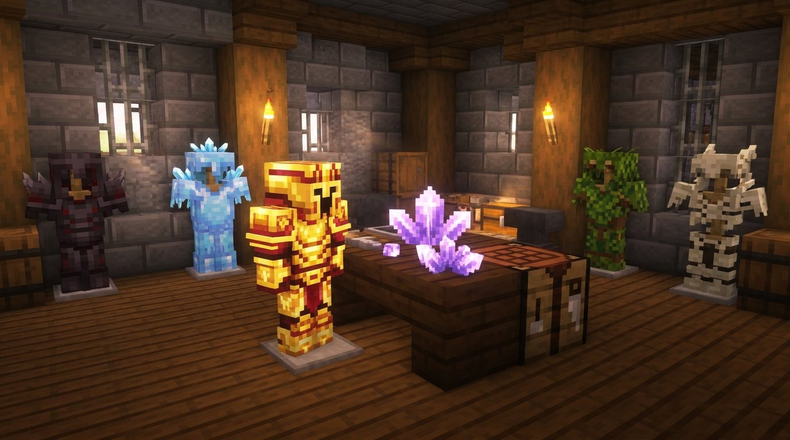
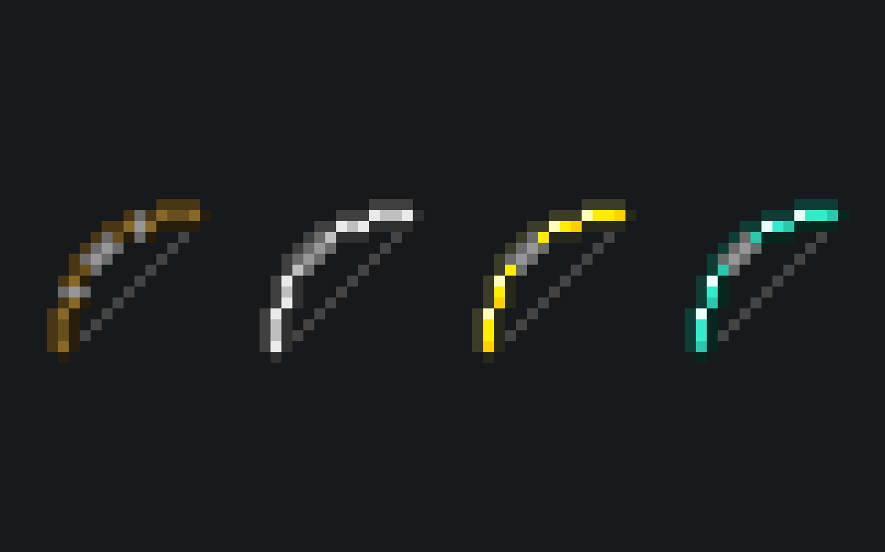
А по виду лука сразу видно его уровень, от каменного до алмазного.
A bow's look also shows its tier, from stone to diamond.
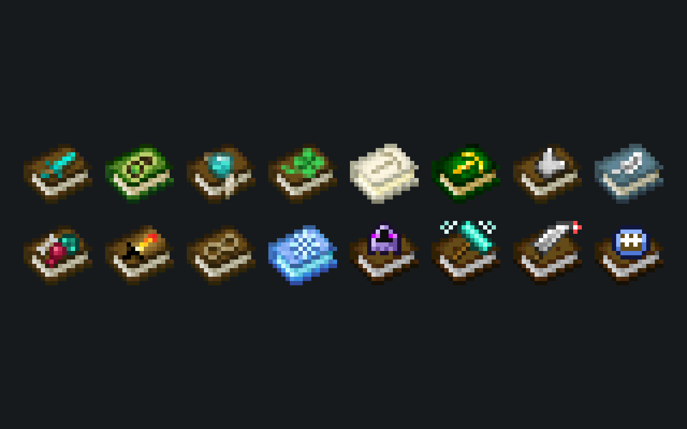
У каждой зачарованной книги своя обложка, и у книг из модов тоже, так что Починку от Остроты отличишь с первого взгляда.
Every enchanted book has its own cover, the modded ones too, so you can tell Mending from Sharpness at a glance.
Пак собран под компанию.
The pack is built for a crew.
Пир кормит всех за столом, «Благословение Очага» бафает всех на базе.
The Feast feeds everyone at the table, the "Hearth's Blessing" buffs everyone at the base.
Косяк идёт по кругу: присел, кликнул по другу, передал.
A joint goes round the circle: crouch, click a friend, pass it on.
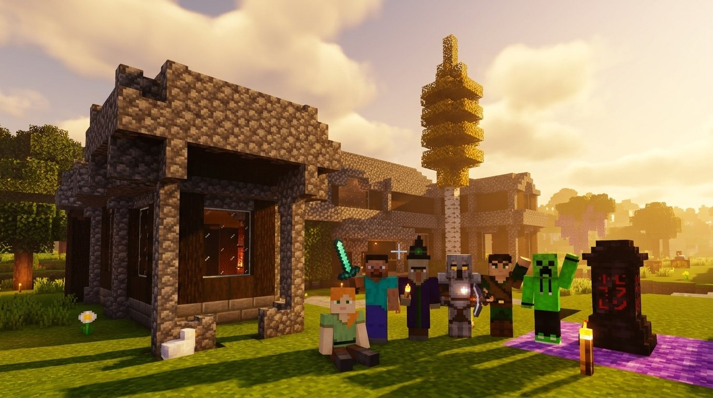

Мобы, боссы и лут подстраиваются под то, сколько вас рядом: впятером враги крепче и злее, но и сундуки щедрее, а опыт делится на всех.
Mobs, bosses and loot adjust to how many of you are nearby: with five of you, enemies are tougher and meaner, but chests are more generous too, and XP is shared by everyone.
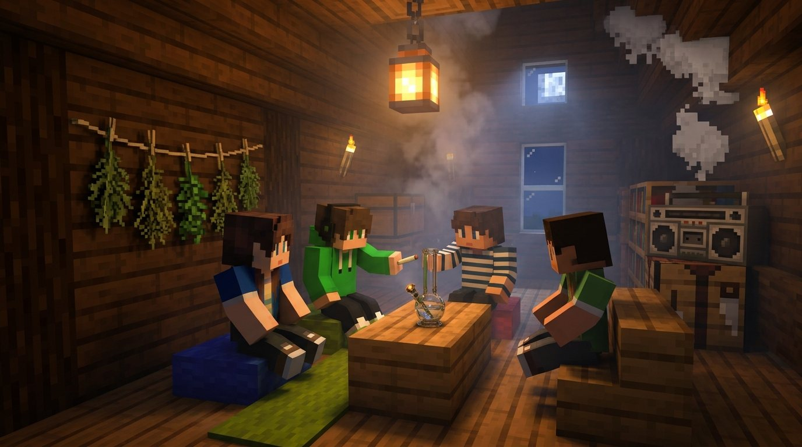
Чем больше накуренных рядом, тем сильнее приход, а «Хотбокс!» в маленькой комнате делит его на всех.
The more high people nearby, the stronger the high, and "Hotbox!" in a small room shares it with everyone.
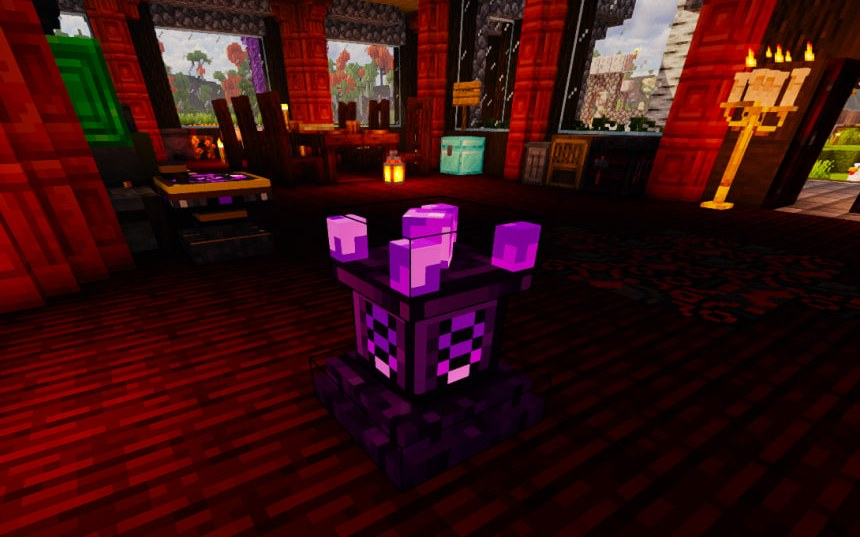
Сообщения из чата всплывают облачками над головой, предмет можно показать всем в чате, а отставшего «Маяк возврата» выдёргивает к базе хоть из другого измерения.
Chat messages pop up as bubbles over people's heads, you can show an item to everyone in chat, and the "Recall Beacon" yanks a straggler back to base, even from another dimension.
Он сам поставит Forge 1.20.1 и весь пак.
It installs Forge 1.20.1 and the whole pack for you.
Адрес пришлём в чате: напиши любому из нас.
We send the address in chat: message any of us.
Мир новый, нас обычно четверо-пятеро, а восьмером всё так же летает. Forge 1.20.1, сборку искать не надо: наш апдейтер сам всё поставит. Пиши любому из нас.
It's a fresh world, there are usually four or five of us, and with eight it still runs smooth. It's Forge 1.20.1, and you don't need to hunt down the modpack: our updater installs everything for you. Just message any of us.